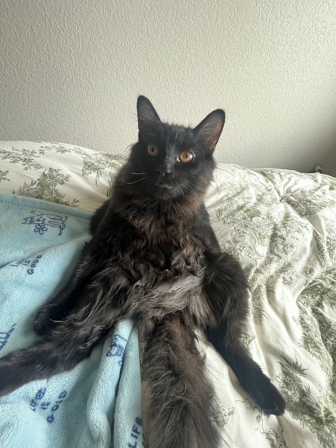

I study how people hear in noisy places.
Research Professional in the Sensory Optimization & Neural Implant Coding Lab and the Center for Applied & Translational Sensory Science.
I run psychophysical and behavioral experiments on how listeners pick out sounds in noisy environments, and I handle the analysis of the data they produce. I am applying to PhD programs in hearing science and auditory neuroscience for Fall 2027.
Experience
-
Research Professional
Sensory Optimization & Neural Implant Coding Lab · PI: Hubert Lim
Validating the psychophysical test suite for an auditory nerve implant; running a pitch-scaling study in normal-hearing and cochlear-implant listeners.
Aug 2026 – present
-
Research Professional (25%)
Center for Applied & Translational Sensory Science · Director: Andrew Oxenham
Hearing and vision screenings aboard the See, Hear, MN mobile unit, in metro and rural Minnesota communities.
Aug 2026 – present
-
Psychology Consultant
Institute for Health Informatics · Dr. Piper Ranallo
Structured review of 300+ behavioral health assessment instruments and their validation literature.
May – Jul 2026
-
Research Professional, then Research Assistant
Auditory Perception & Cognition Lab · PI: Andrew Oxenham
Speech-in-speech perception and listening effort, measured with EEG and pupillometry.
May 2024 – Jul 2026
-
Research Assistant
Noel Lab, Neuroscience · PI: Jean-Paul Noel
Designed and piloted a visual encoding and reward prediction experiment (N = 11).
May – Oct 2025
-
Research Assistant
Animal Communication Lab · PI: Mark Bee
Phonotaxis experiments on masking release in Cope’s gray treefrog.
Summer 2024
Full history, publications, and technical skills are in my CV.
Education
-
B.S., Psychology
University of Minnesota, Twin Cities
2025
Office Support Staff
My work is overseen by Poppy and Lloyd, who are always ready to assist with reading literature or reviewing code.
Poppy

Lloyd